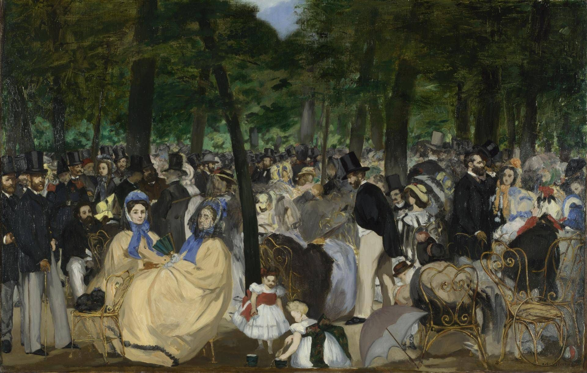

杜伊勒里花园的音乐会 Music in the Tuileries Gardens
马奈 · 1862年 · 伦敦国家美术馆
Édouard Manet · 1862 · The National Gallery, London
图片：Wikimedia Commons，公有领域 / Image: Wikimedia Commons, public domain

发现 · Discover
每周两次的音乐会 Twice-weekly concerts
人们聚在杜伊勒里花园里，听每周两次的户外音乐会。
People have gathered in the Tuileries Gardens to hear one of the twice-weekly open-air concerts.
时髦的人群 A fashionable crowd
人群里有不少艺术家和知识分子。男人戴着黑色高礼帽，女人戴着软帽、拿着阳伞。
The crowd includes many artists and intellectuals. The men wear black top hats; the women, bonnets and parasols.
一幅群像 A group portrait
这也是一幅群像：马奈画进了自己的家人、朋友，有艺术家、作家和音乐家。
It is also a group portrait: Manet included his family and friends, artists, writers and musicians.
马奈自己 Manet himself
画面最左边，马奈把自己也画了进去。
At the far left edge of the picture, Manet painted himself.
新的铁椅子 New iron chairs
前景的铁椅子，是1862年才刚刚换掉花园里原来的木椅子的。
The iron chairs in the foreground had only just replaced the garden's old wooden chairs in 1862.
孩子们的颜色 The children's colours
孩子们的帽子和衣服上那些鲜艳的颜色，用的几乎是纯颜料：钴蓝、朱砂、铬橙。
The bright touches in the children's bonnets and clothes are painted in almost pure pigments: cobalt blue, vermilion, chrome orange.
现代绘画的开始 The beginning of modern painting
因为它的题材和画法，这幅画被认为是现代绘画最早的例子之一。
Because of its subject and technique, this painting is considered one of the earliest examples of modern painting.
故事 · The story
ACT I 第一幕 · 花园里的音乐会 A concert in the garden
19世纪60年代，巴黎时髦的人们，会到杜伊勒里花园听每周两次的户外音乐会。马奈和朋友们常去，他在那里画了很多速写。
In the 1860s, fashionable Parisians gathered in the Tuileries Gardens for twice-weekly open-air concerts. Manet often went with his friends and made many sketches there.
1862年 · 伦敦国家美术馆 / 1862 · The National Gallery, London
ACT II 第二幕 · 现代生活 Modern life
1862年，他画下了这群人。他画的不是神话或历史，而是自己身边的现代城市生活，这在当时很新。
In 1862, he painted this crowd. He painted not myth or history, but the modern city life around him, which was new at the time.
1862年 · 伦敦国家美术馆 / 1862 · The National Gallery, London
ACT III 第三幕 · 伦敦与都柏林 London and Dublin
1917年，这幅画作为休·莱恩爵士遗赠的一部分，由伦敦国家美术馆和都柏林休·莱恩美术馆共同拥有，两边轮流展出。2026年，它回到了伦敦。
In 1917, the painting came to the National Gallery as part of the Sir Hugh Lane Bequest, shared with the Hugh Lane Gallery in Dublin, and the two galleries take turns to display it. In 2026, it returned to London.
1862年 · 伦敦国家美术馆 / 1862 · The National Gallery, London
现代绘画，从一个下午的音乐会开始。 Modern painting began with an afternoon concert.
作品档案 · Artwork record
| 画家（生卒年） · Artist (dates) | 爱德华·马奈（1832–1883） / Édouard Manet (1832–1883) |
|---|---|
| 画名 · Title | 杜伊勒里花园的音乐会 / Music in the Tuileries Gardens |
| 年份 · Date | 1862年 / 1862 |
| 材质 · Medium | 布面油画 / Oil on canvas |
| 尺寸 · Dimensions | 76.2 × 118.1 cm |
| 收藏地 · Collection | 伦敦国家美术馆，41号展厅 / The National Gallery, London, Room 41 |
| 来源说明 · Credit line | 休·莱恩爵士遗赠，1917年；与都柏林休·莱恩美术馆合作（编号 NG3260） / Sir Hugh Lane Bequest, 1917. In partnership with Hugh Lane Gallery, Dublin (NG3260) |
关于画家 · About the artist
爱德华·马奈（1832–1883），法国画家，生于巴黎。他是描绘现代生活的先驱，对印象派画家影响很深。
Édouard Manet (1832–1883) was a French painter, born in Paris. A pioneer in painting modern life, he had a deep influence on the Impressionists.
更多马奈的画 · More by Édouard Manet